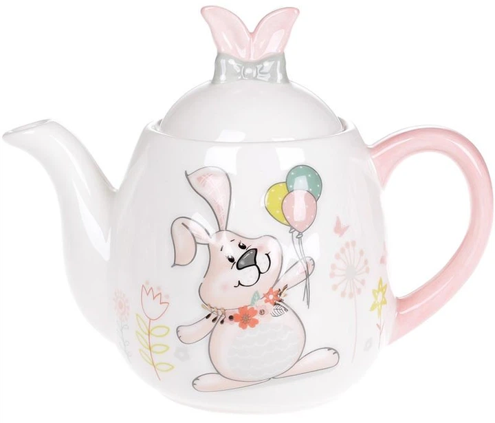
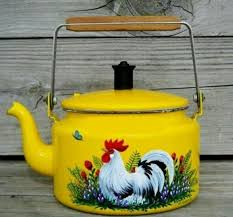

Всем здраствуйте! этот сайт подскажет или даст инфоррмацию о лучших чайниках 2025/2026 года!
Топ 5 чайников 2025/2026 года
- Электрический чайник Xiaomi Mi Smart Kettle Pro

- Электрический чайник Bosch TWK8613P

- Электрический чайник Philips HD9350/90

- Электрический чайник Tefal KI730D30

- Электрический чайник Kenwood SJM610
